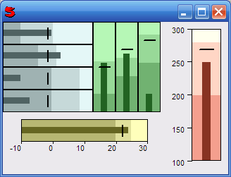

(data = false, satisfactory = 0, good = 0, target = 0, range = #(0, 100),
color = 0x506363, width = 128, height = 32,
rectangle = true, outside = 5, vertical = false,
axis = false, axisDensity = 5)
Create a control used to draw a Bullet Graph inside a window. Bullet Graphs are similar to circular gauges and meters, but they are much more compact.
data is the value that you want to represent inside this graph.
The satisfactory argument represent the minimum value that you consider satisfactory (but not too much!) for the data value. Values below the satisfactory minimum are considered 'bad'. The good argument is for the minimum value that you consider good. The target argument represent a target value, i.e. a very desirable value that you think it can be reached if you work hard!
The range argument is defined as an object with minimum and maximum range values for the graph. Default is #(0, 100).
The color argument represent the color of the data bar (the main value bar). Other colors (for bad, satisfactory and good bars) are generated automatically.
The width argument is the width, in pixel, of the graph.
The height argument is the height, in pixel, of the graph.
If rectangle is false then no border will be drawn around the graph.
With the outside argument you can specify a border frame, in pixel, out of the rectangle graph area.
If vertical argument is true, the graph will be drawn as a vertical bar. If false, it will be drawn as an horizontal bar.
If axis argument is true an axis with reference values will be drawn beside (or below) the graph.
With axisDensity you can specify how many reference values will be drawn below the axis. Default is 5.
For example:
Window(
#(Horz
(Vert
(Horz
(Vert
(BulletGraph
data: 55, satisfactory: 20, good: 56, target: 50, outside: 0)
(BulletGraph
data: 65, satisfactory: 40, good: 60, target: 50, outside: 0)
(BulletGraph
data: 20, satisfactory: 55, good: 86, target: 50, outside: 0)
(BulletGraph
data: 30, satisfactory: 55, good: 86, target: 50, outside: 0)
)
(BulletGraph
data: 55, satisfactory: 20, good: 56, target: 50,
outside: 0, vertical:, color: 0x226322)
(BulletGraph
data: 65, satisfactory: 40, good: 60, target: 70,
outside: 0, vertical:, color: 0x226322)
(BulletGraph
data: 20, satisfactory: 55, good: 86, target: 80,
outside: 0, vertical:, color: 0x226322)
)
(BulletGraph 24, satisfactory: 20, good: 25, target: 22, range: (-10,30)
outside: 10, color: 0x666622, axis: true, width: 216, height: 64)
)
(BulletGraph 250, satisfactory: 200, good: 280, target: 270, range: (100,300)
outside: 10, color: 0x883322, axis: true, vertical:,
width: 96, height: 216)
)
)
Would display:
See also: SparklineControl